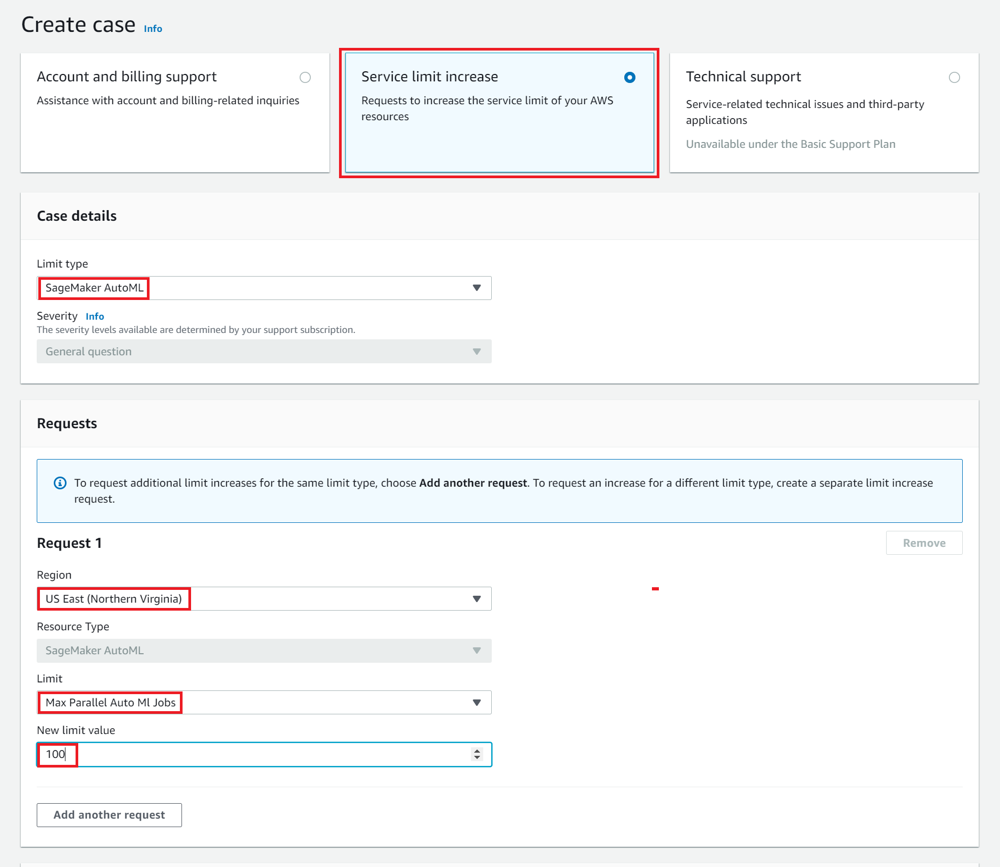

Amazon SageMaker Autopilot quotas
There are quotas that limit the resources available to you when using Amazon SageMaker Autopilot. Some of these limits are increasable and some are not.
Note
The resource quotas documented in the following sections are valid for versions of Amazon SageMaker Studio 3.22.2 and higher. For information on updating your version of SageMaker Studio, see Shut Down and Update SageMaker Studio and Studio Apps.
Quotas that you can increase
There are default limits for the size of the input datasets: file size of a single Parquet file (*), the target dataset size subsampling (**), and the number of concurrent jobs you can run with Amazon SageMaker Autopilot for each AWS account per AWS Region.
Resource limits | |||||||||||||||||||||||||||||||||||||||||||||||||||||||||||||||||||||||||||||||||||||||||||||||||||
|---|---|---|---|---|---|---|---|---|---|---|---|---|---|---|---|---|---|---|---|---|---|---|---|---|---|---|---|---|---|---|---|---|---|---|---|---|---|---|---|---|---|---|---|---|---|---|---|---|---|---|---|---|---|---|---|---|---|---|---|---|---|---|---|---|---|---|---|---|---|---|---|---|---|---|---|---|---|---|---|---|---|---|---|---|---|---|---|---|---|---|---|---|---|---|---|---|---|---|---|
| Resource | Regions | Default limits | Can be increased up to | ||||||||||||||||||||||||||||||||||||||||||||||||||||||||||||||||||||||||||||||||||||||||||||||||
| Size of input dataset | All | 100 GB | Hundreds of GBs | ||||||||||||||||||||||||||||||||||||||||||||||||||||||||||||||||||||||||||||||||||||||||||||||||
| Size of a single Parquet file* | All | 2 GB | Tens of GBs | ||||||||||||||||||||||||||||||||||||||||||||||||||||||||||||||||||||||||||||||||||||||||||||||||
| Target dataset size for subsampling** | All | 5 GB | Hundreds of GBs | ||||||||||||||||||||||||||||||||||||||||||||||||||||||||||||||||||||||||||||||||||||||||||||||||
| Number of concurrent Autopilot jobs | us-east-1, us-east-2,us-west-2, ap-northeast-1, eu-west-1, eu-central-1 | 4 | Hundreds | ||||||||||||||||||||||||||||||||||||||||||||||||||||||||||||||||||||||||||||||||||||||||||||||||
| ap-northeast-2, ap-southeast-2, eu-west-2, ap-southeast-1 | 2 | Hundreds | |||||||||||||||||||||||||||||||||||||||||||||||||||||||||||||||||||||||||||||||||||||||||||||||||
| All other Regions | 1 | Tens | |||||||||||||||||||||||||||||||||||||||||||||||||||||||||||||||||||||||||||||||||||||||||||||||||
Note
*This 2 GB size limit is for a single compressed Parquet file. You can provide a Parquet dataset that includes multiple compressed Parquet files. After the files are decompressed, they may each expand to a larger size.
**Autopilot automatically subsamples input datasets that are larger than the target dataset size while accounting for class imbalance and preserving rare class labels.
You can increase these limits by contacting AWS Support.
To request a quota increase:
-
Open the AWS Support Center
page, sign in if necessary, and then choose Create case. -
On the Create case page, choose Service limit increase.
-
In the Case details panel, select SageMaker AutoML for the Limit Type.
-
On the Requests panel for Request 1, select the Region, the resource Limit to increase, and the New Limit value that you are requesting. If you have additional requests for quota increases, select Add another request.
 -
Provide your preferred Contact options and choose Submit.
Resource quotas
The following table contains the runtime resource limits for an Amazon SageMaker Autopilot job in an AWS Region.
Resource limits per Autopilot job | |||||||||||||||||||||||||||||||||||||||||||||||||||||||||||||||||||||||||||||||||||||||||||||||||||
|---|---|---|---|---|---|---|---|---|---|---|---|---|---|---|---|---|---|---|---|---|---|---|---|---|---|---|---|---|---|---|---|---|---|---|---|---|---|---|---|---|---|---|---|---|---|---|---|---|---|---|---|---|---|---|---|---|---|---|---|---|---|---|---|---|---|---|---|---|---|---|---|---|---|---|---|---|---|---|---|---|---|---|---|---|---|---|---|---|---|---|---|---|---|---|---|---|---|---|---|
| Resource | Limit per Autopilot job | ||||||||||||||||||||||||||||||||||||||||||||||||||||||||||||||||||||||||||||||||||||||||||||||||||
| Maximum runtime for an Autopilot job | 30 days | ||||||||||||||||||||||||||||||||||||||||||||||||||||||||||||||||||||||||||||||||||||||||||||||||||